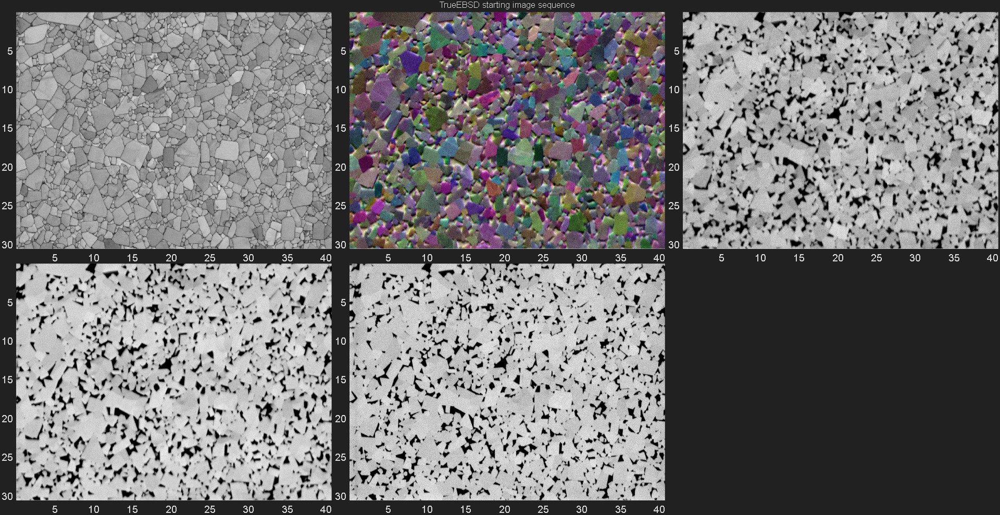
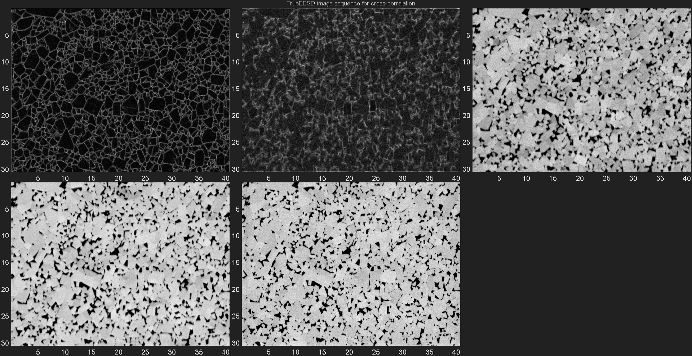
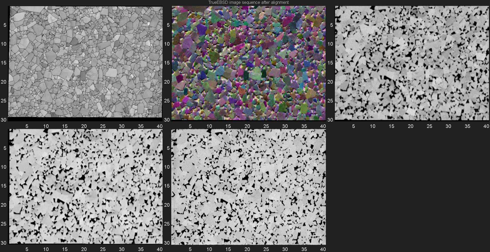
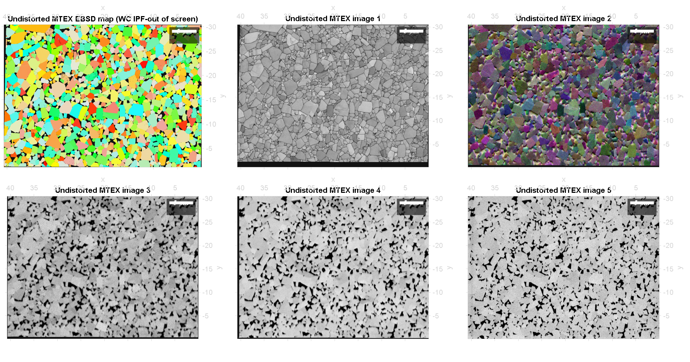

Contents
- MTEX TrueEBSD for WC Contiguity calculation
- Add trueEBSD related MATLAB paths
- Data Import
- Set up TrueEBSD job
- Resize images to match pixel size and FOV
- [Optional] Change cross-correlation function (XCF) ROI settings
- Calculate local image shifts and fit to a distortion model
- Compute image shifts
- Undistort images
- Plot data as MTEX EBSD maps
- Finish
MTEX TrueEBSD for WC Contiguity calculation
authors: Vivian Tong, National Physical Laboratory, Teddington, UK; Stefan Olovsjö, Seco Tools AB, R&D Materials and Technology, 737 82 Fagersta, Sweden; Contact: vivian.tong@npl.co.uk
Description: Example script to run trueEBSD workflow MATLAB R2024a and mtex version forked from feature/grain3d, approx mtex6.0.beta3
Inputs: mtexdata trueEbsdWCCo
Outputs: Published html file containing code and outputs
Version control 20241001 - create TrueEBSD example script using data from SECOvisit_020_1_site1
clear; close all; home; % TrueEBSD version ID vId = '20240916 / app version 1.2.1';
Add trueEBSD related MATLAB paths
addpath(genpath(cd));
Data Import
Begin by loading an EBSD map with a list of images we want to use together with the EBSD map data. This contains an EBSD map of a WC-Co composite acquired at 20 kV accelerating voltage, and four images of the same sample area within ebsd.opt.trueEbsdImgs:
- fsdB3 is a colour image from the three FSD detectors mounted at the bottom of the EBSD camera, and the EBSD camera is retracted by 20 mm relative to the EBSD map acquisitiion position;
- fsdT3 is a greyscale image from the same beam scan as fsdB3 and the FSD detectors at the top of the EBSD camera;
- fsdT1 is a greyscale image from the FSD detectors at the top of the EBSD camera at the EBSD map acquisitiion position;
- fsdT10 is a greyscale image from the FSD detectors at the top of the EBSD camera, in EBSD map acquisitiion position, and the electron beam accelerating voltage lowered to 10 kV.
- ebsd.opt.trueEbsdImgs.pixSzImg is the image pixel size in microns for all four images.
tic
mtexdata trueEbsdWCCo
display(ebsd);
display(ebsd.opt.trueEbsdImgs);
ebsd = EBSDsquare
Phase Orientations Mineral Color Symmetry Crystal reference frame
0 6657 (0.85%) notIndexed
1 714592 (91%) W C LightSkyBlue -6m2 X||a*, Y||b, Z||c
2 62791 (8%) Co-fcc DarkSeaGreen m-3m
3 2392 (0.3%) Co-hcp Goldenrod 6/mmm X||a*, Y||b, Z||c
Properties: bc, bs, bands, MAD, quality, oldId
Scan unit : um
Grid size (square): 768 x 1024
Header: <a href="matlab:dispStruct(pullTemp(1))">show struct</a>
Images: <a href="matlab:dispStruct(pullTemp(2))">show struct</a>
trueEbsdImgs: <a href="matlab:dispStruct(pullTemp(3))">show struct</a>
ebsd = EBSDsquare
Phase Orientations Mineral Color Symmetry Crystal reference frame
0 6657 (0.85%) notIndexed
1 714592 (91%) W C LightSkyBlue -6m2 X||a*, Y||b, Z||c
2 62791 (8%) Co-fcc DarkSeaGreen m-3m
3 2392 (0.3%) Co-hcp Goldenrod 6/mmm X||a*, Y||b, Z||c
Properties: bc, bs, bands, MAD, quality, oldId
Scan unit : um
Grid size (square): 768 x 1024
Header: <a href="matlab:dispStruct(pullTemp(4))">show struct</a>
Images: <a href="matlab:dispStruct(pullTemp(5))">show struct</a>
trueEbsdImgs: <a href="matlab:dispStruct(pullTemp(6))">show struct</a>
struct with fields:
fsdB3: [1536×2048×3 double]
fsdT3: [1536×2048 double]
fsdT1: [1536×2048 double]
fsdT10: [1536×2048 double]
pixSzImg: 0.0199
Set up TrueEBSD job
@distortedImg imgList{:} is a TrueEBSD class containing information about an image or EBSD map and its distortion types within the TrueEBSD workflow.
job is a @trueEbsd object containing a sequence of @distortedImg images.
% Construct distortedImg list and set up trueEBSD job dataName = 'trueEbsdWCCo'; % Do some simple image denoising ebsd.opt.trueEbsdImgs.fsdB3 = rescale(imboxfilt(ebsd.opt.trueEbsdImgs.fsdB3,3)); ebsd.opt.trueEbsdImgs.fsdT3 = rescale(imboxfilt(ebsd.opt.trueEbsdImgs.fsdT3,3)); ebsd.opt.trueEbsdImgs.fsdT1 = rescale(imboxfilt(ebsd.opt.trueEbsdImgs.fsdT1,3)); ebsd.opt.trueEbsdImgs.fsdT10 = rescale(imboxfilt(ebsd.opt.trueEbsdImgs.fsdT10,3)); % Construct @distortedImg imgList{:} imgList=cell(1,5); imgList{1} = distortedImg('bc','drift-shift', ebsd, 'mapplottingConvention', ebsd.plottingConvention, 'highContrast',1,'edgePadWidth',3); imgList{2} = distortedImg(ebsd.opt.trueEbsdImgs.fsdB3,'true', 'dxy', ebsd.opt.trueEbsdImgs.pixSzImg, 'highContrast',1,'edgePadWidth',5); imgList{3} = distortedImg(ebsd.opt.trueEbsdImgs.fsdT3,'shift', 'dxy', ebsd.opt.trueEbsdImgs.pixSzImg, 'highContrast',1,'edgePadWidth',5); imgList{4} = distortedImg(ebsd.opt.trueEbsdImgs.fsdT1,'tilt', 'dxy', ebsd.opt.trueEbsdImgs.pixSzImg, 'highContrast',1,'edgePadWidth',5); imgList{5} = distortedImg(ebsd.opt.trueEbsdImgs.fsdT10,'true', 'dxy', ebsd.opt.trueEbsdImgs.pixSzImg, 'highContrast',1,'edgePadWidth',3); % @trueEbsd job is a TrueEBSD class. % The starting data for the TrueEBSD workflow are stored in job.imgList. job = trueEbsd(imgList{:});
Plot as-imported image sequence to check they are all of similar regions on the sample, but the image contrasts look quite different.
figure('WindowState', 'maximized'); t=tiledlayout('flow','TileSpacing','tight','Padding','tight'); title(t,'TrueEBSD starting image sequence'); for n=1:numel(imgList) nexttile; imagesc('XData',imgList{n}.dx.*(1:size(imgList{n}.img,2)),... 'YData',imgList{n}.dy*(1:size(imgList{n}.img,1)),... 'CData',imgList{n}.img); colormap gray; axis image on ij; end linkaxes; t1 = toc; disp(['Finished set up trueEBSD job for ' dataName ' in ' num2str(t1,'%.1f') ' seconds']);
Finished set up trueEBSD job for trueEbsdWCCo in 10.0 seconds
Resize images to match pixel size and FOV
The EBSD map and images in job.imgList{:} are of the same sample area but have different pixel sizes. Here, we match up the pixel positions of the the image sequence in job.imgList{:}.
Inputs - distorted image sequence job.imgList{:}, target pixel size pixSzIn
Outputs - distorted image sequence on a common pixel grid job.resizedList{:}
pixSzIn = 0; % target pixel length in microns, or 0 to default to smallest common pixel size
job = pixelSizeMatch(job,pixSzIn);
using default pixel size of 0.019875 um, minimum from imgList
Now job has a new property job.resizedList, which is where the outputs of pixelSizeMatch are stored.
display(job); t1 = toc; disp(['Finished resize images to match pixel size and FOV for ' dataName ' in ' num2str(t1,'%.1f') ' seconds']);
job =
trueEbsd with properties:
imgList: {5×1 cell}
resizedList: {5×1 cell}
undistortedList: {[1×1 distortedImg]}
shifts: {}
Finished resize images to match pixel size and FOV for trueEbsdWCCo in 29.7 seconds
[Optional] Change cross-correlation function (XCF) ROI settings
TrueEBSD image registration computes the cross-correlation function (XCF) between pairs of regions of interest (ROI) in sequential images. The ROI size and spacing within each image pair are tunable parameters in TrueEBSD.
The pixelSizeMatch function automatically guesses some normally sensible parameters for a polycrystal EBSD map, but you can also set custom values. You can define one XCF setting in job.resizedList{n}.setXCF{:} When selecting ROI size, a good rule of thumb is an ROI at least 4 times wider than the measured local image shifts. It also needs to be a power of 2 for the XCF to work properly.
You can set a custom XCF for each individual distortion model in the distorted image (job.resizedList{n}.distortionModel).
Here, we deliberately misjudge and choose an ROI box that is too small for the EBSD map job.resizedList{1}, which is used to correct EBSD map drift (linear interpolation between rigid EBSD map rows).
customSetXCF1.ROISize=2^round(log2(32)); customSetXCF1.NumROI=struct; customSetXCF1.NumROI.x = 40; % good rule of thumb: as many ROI as grains in FOV customSetXCF1.NumROI.y = round(customSetXCF1.NumROI.x * size(job.resizedList{1}.img,1)/size(job.resizedList{1}.img,2)); % follow image aspect ratio customSetXCF1.XCFMesh=250; % correlation peak upsampling, default 250 customSetXCF1.xcfImg = 'edge'; %choose whether to correlate edge transforms or images customSetXCF2 = customSetXCF1; customSetXCF2.ROISize=2^round(log2(128)); % assign customSetXCF job.resizedList{1}.setXCF{2} = customSetXCF1; job.resizedList{3}.setXCF{1} = customSetXCF2; % or just rewrite individual properties job.resizedList{1}.setXCF{1}.ROISize = 2^round(log2(64)); job.resizedList{3}.setXCF{1}.xcfImg = 'img'; job.resizedList{4}.setXCF{1}.xcfImg = 'img'; job.resizedList{5}.setXCF{1}.xcfImg = 'img';
Calculate local image shifts and fit to a distortion model
Now we compute local image ROI shifts and fit them to distortion models. After each image correction step, the average ROI shifts (X, Y and length components) are printed to the command window.
The 'fitErr' flag means that residual local image shifts are recomputed after image correction but not included in the final result. If this number is small (around 1 pixel or less) then most likely the image registration was successful.
Just now, we intentionally set the ROI box size too small for the EBSD map drift correction step. Therefore, the average residual shift is > 2 pixels long. calcShifts tries to fix this by doubling the ROI size and retrying the image registration step. It will try to do this until either the ROI are too big to fit into the image, or the residual shifts are < 2 pixels.
The only exception to this is where the distortion name is 'true', such as between images 3 and 2 in this dataset. For this case,TrueEBSD assumes that all the shifts between this image pair are zeros, and ignores the residual shifts, even if they are greater than 2 pixels.
These are the image pairs that will be used for cross-correlation.
figure('WindowState', 'maximized'); t=tiledlayout('flow','TileSpacing','tight','Padding','tight'); title(t,'TrueEBSD image sequence for cross-correlation'); for n=1:numel(job.resizedList) nexttile; imagesc('XData',job.resizedList{n}.dx.*(1:size(job.resizedList{n}.img,2)),... 'YData',job.resizedList{n}.dy*(1:size(job.resizedList{n}.img,1)),... 'CData',job.resizedList{n}.(job.resizedList{n}.setXCF{1}.xcfImg)); colormap gray; axis image on ij; end linkaxes;
Compute image shifts
Now job has a new property job.shifts, which is where the outputs of calcShifts are stored.
job = calcShifts(job,'fitErr'); display(job); t1 = toc; disp(['Finished calculate image shifts and fit distortion models for ' dataName ' in ' num2str(t1,'%.1f') ' seconds']);
Calculating shifts between images 2 and 1 (drift-shift):
Mean X-shift length 6.3428 pixels
Mean Y-shift length 8.5645 pixels
Mean shift length 11.5494 pixels
Mean X-shift length 3.1241 pixels
Mean Y-shift length 3.7409 pixels
Mean shift length 5.4665 pixels
Residual shifts / pixels between images 2 and 1 (drift-shift)
Mean X-shift length 2.9988 pixels
Mean Y-shift length 3.452 pixels
Mean shift length 5.1183 pixels
Residual shifts length was greater than 2 pixels between images 2 and 1 (drift-shift)
Retrying calculation with double ROI size of 128 pixels for distortionModel 1...
Retrying calculation with double ROI size of 64 pixels for distortionModel 2...
Calculating shifts between images 2 and 1 (drift-shift):
Mean X-shift length 6.1232 pixels
Mean Y-shift length 11.855 pixels
Mean shift length 14.0975 pixels
Mean X-shift length 2.0404 pixels
Mean Y-shift length 4.988 pixels
Mean shift length 5.8124 pixels
Residual shifts / pixels between images 2 and 1 (drift-shift)
Mean X-shift length 1.9054 pixels
Mean Y-shift length 3.019 pixels
Mean shift length 3.9496 pixels
Residual shifts length was greater than 2 pixels between images 2 and 1 (drift-shift)
Retrying calculation with double ROI size of 256 pixels for distortionModel 1...
Retrying calculation with double ROI size of 128 pixels for distortionModel 2...
Calculating shifts between images 2 and 1 (drift-shift):
Mean X-shift length 5.904 pixels
Mean Y-shift length 11.5778 pixels
Mean shift length 13.6513 pixels
Mean X-shift length 0.93305 pixels
Mean Y-shift length 5.1228 pixels
Mean shift length 5.3345 pixels
Residual shifts / pixels between images 2 and 1 (drift-shift)
Mean X-shift length 0.74979 pixels
Mean Y-shift length 1.6147 pixels
Mean shift length 1.9316 pixels
Calculating shifts between images 3 and 2 (true):
Mean X-shift length 0 pixels
Mean Y-shift length 0 pixels
Mean shift length 0 pixels
Residual shifts / pixels between images 3 and 2 (true)
Mean X-shift length 0.38823 pixels
Mean Y-shift length 1.9905 pixels
Mean shift length 2.0487 pixels
Calculating shifts between images 4 and 3 (shift):
Mean X-shift length 10.6057 pixels
Mean Y-shift length 6.7925 pixels
Mean shift length 12.6342 pixels
Residual shifts / pixels between images 4 and 3 (shift)
Mean X-shift length 0.54457 pixels
Mean Y-shift length 0.63192 pixels
Mean shift length 0.94546 pixels
Calculating shifts between images 5 and 4 (tilt):
Mean X-shift length 11.4223 pixels
Mean Y-shift length 8.7061 pixels
Mean shift length 14.4863 pixels
Mean X-shift length 0.29411 pixels
Mean Y-shift length 0.22396 pixels
Mean shift length 0.40039 pixels
Mean X-shift length 0.20574 pixels
Mean Y-shift length 0.22123 pixels
Mean shift length 0.32591 pixels
Residual shifts / pixels between images 5 and 4 (tilt)
Mean X-shift length 0.20068 pixels
Mean Y-shift length 0.16554 pixels
Mean shift length 0.28427 pixels
job =
trueEbsd with properties:
imgList: {5×1 cell}
resizedList: {5×1 cell}
undistortedList: {[1×1 distortedImg]}
shifts: {{1×2 cell} {1×1 cell} {1×1 cell} {1×3 cell}}
Finished calculate image shifts and fit distortion models for trueEbsdWCCo in 420.7 seconds
Undistort images
This applies the image shifts between each image pair in job.shifts to the data in job.resizedList, and outputs a new property job.undistortedList which contains aligned image data. Now all pixels in this image sequence can be directly overlaid.
job = undistort(job);
Plot images after distortion correction
figure('WindowState', 'maximized'); t=tiledlayout('flow','TileSpacing','tight','Padding','tight'); title(t,'TrueEBSD image sequence after alignment'); for n=1:numel(job.undistortedList) nexttile; imagesc('XData',job.undistortedList{n}.dx.*(1:size(job.undistortedList{n}.img,2)),... 'YData',job.undistortedList{n}.dy*(1:size(job.undistortedList{n}.img,1)),... 'CData',job.undistortedList{n}.img); colormap gray; axis image on ij; end linkaxes; t1 = toc; disp(['Finished remove image distortions for ' dataName ' in ' num2str(t1,'%.1f') ' seconds']);
Finished remove image distortions for trueEbsdWCCo in 693.3 seconds
Plot data as MTEX EBSD maps
We can also plot all images as MTEX EBSD maps. This is a good check to make sure images are not indexed 'upside down' relative to the EBSD map. Since images are usually stored and read by MATLAB using the 'axis ij' convention, but EBSD maps can have other kinds of plotting convention defined in ebsd.plottingConvention, we need the ij2EbsdSquare helper function to rotate the image data into the ebsd map plottingConvention.
figure;
nextAxis;
plot(job.undistortedList{1}.ebsd('W C'), job.undistortedList{1}.ebsd('W C').orientations, ...
job.undistortedList{1}.ebsd.plottingConvention,'coordinates','on');
title('Undistorted MTEX EBSD map (WC IPF-out of screen)','Color','k');
for n=1:numel(job.undistortedList)
nextAxis;
plot(job.undistortedList{1}.ebsd, ...
ij2EbsdSquare(job.undistortedList{1}.ebsd,job.undistortedList{n}.img), ...
job.undistortedList{1}.ebsd.plottingConvention,'coordinates','on');
mtexColorMap gray;
title(['Undistorted MTEX image ' num2str(n)],'Color','k');
end
I'm going to colorize the orientation data with the standard MTEX ipf colorkey. To view the colorkey do: ipfKey = ipfColorKey(ori_variable_name) plot(ipfKey)
Finish
This is the end of the TrueEBSD distortion correction workflow.
You can save your data here, or do any further data analysis that you would on normal MTEX EBSD maps.
For this dataset, we want to measure the contiguity of the WC grains in this EBSD map. That will be covered in the next example script example_WCCo_contiguity.
t1 = toc; disp(['Finished TrueEBSD workflow for ' dataName ' in ' num2str(t1,'%.1f') ' seconds, exiting program now. ']);
Finished TrueEBSD workflow for trueEbsdWCCo in 749.2 seconds, exiting program now.